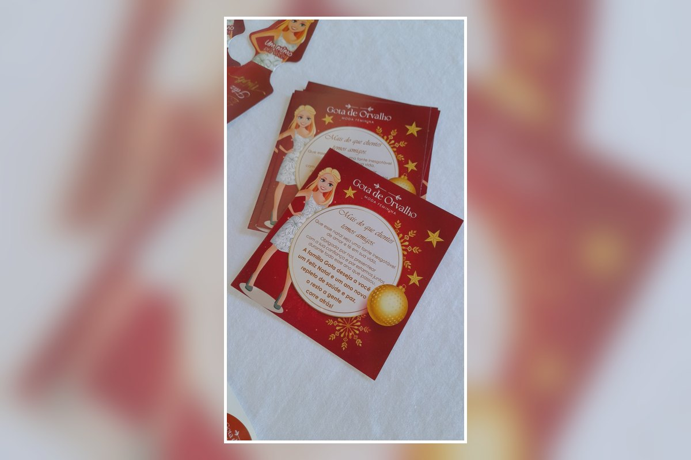

Personalizado com sua identidade
Logo, cores, mensagem, redes sociais e informações podem ser organizadas de acordo com a sua marca.
Leve a identidade da sua marca para os presentes, pedidos e lembranças de fim de ano. O cartão de Natal pode ser personalizado com sua logo, cores, mensagem e informações de contato para criar uma apresentação especial para clientes e parceiros.

O cartão de Natal é uma forma simples de agradecer, fortalecer o relacionamento com clientes e deixar a embalagem mais completa. A arte pode seguir a identidade visual da empresa e o estilo da campanha de fim de ano.
Logo, cores, mensagem, redes sociais e informações podem ser organizadas de acordo com a sua marca.
Ideal para acompanhar encomendas, kits, brindes, lembranças, presentes corporativos e embalagens de Natal.
Use o cartão para agradecer pelo ano, desejar boas festas e reforçar o relacionamento com quem compra da sua empresa.
Envie sua arte, referência ou ideia pelo WhatsApp. Confirmamos o modelo, quantidade, material, acabamento, prazo e valor antes da produção.
Envie sua referência e solicite um orçamento personalizado para a sua campanha de fim de ano.